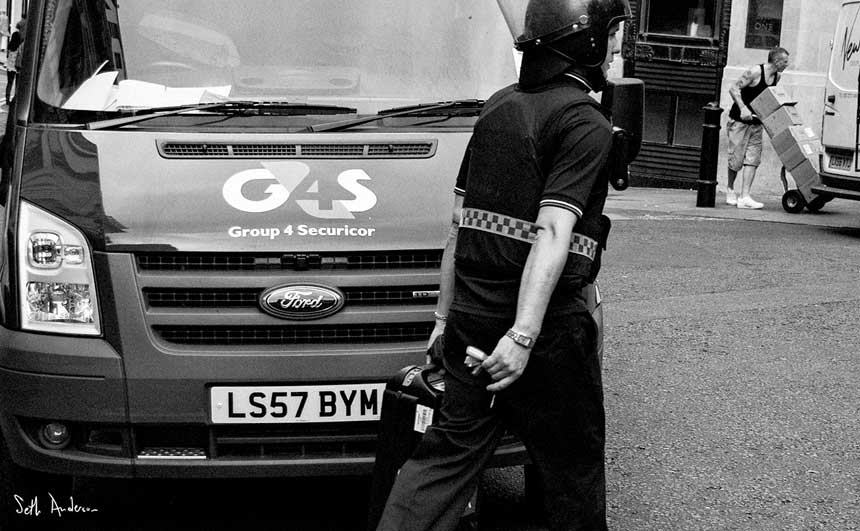

Corruption

Every year, Africa loses around a quarter of its GDP to corruption. That is around $148 billion that could otherwise be spent on schools, hospitals, roads, and clean water for its people.
Corruption is especially rife when it comes to lucrative natural resources like oil and minerals. In the Niger Delta, over two million barrels of oil are extracted every single day. But hardly any of the money that this generates finds its way back to citizens. Not a single new road has been funded by the government in ten years.
Corruption isn't just a problem in Africa. Europe loses an estimated €120 billion to corruption every year - an amount which senior officials have described as "breathtaking".
Giving citizens full and open access to public contracts is a crucial first step in tackling corruption. Sign now to call on world leaders to make this happen.
Fraud
Defence contracts are often very large and very secret, providing fraudsters with an ideal opportunity to siphon off taxpayers' cash free from public scrutiny. It is estimated that $20 billion dollars is lost to fraud and corruption in the defence sector every year.
Cases of fraud are estimated to have cost $60 billion in Iraq between 2003 and 2011, in a bonanza for corporations looking to cash in on crisis.
Public contracts should be public by default and classified only when strictly necessary. Citizens should be able to see that public money is properly spent, and not pocketed by politicians and businessmen. Sign the petition now.
Unaccountable outsourcing
Across the world, more and more public services are being provided by private contractors. But unfortunately these contractors are not always required to be as transparent and accountable as public sector service providers.
Take G4S, a security company who receive close to £1 billion from UK taxpayers each year. They are being investigated by the UK government's Serious Fraud Office for overbilling the government by millions of pounds. They have made headlines with their bungling of huge contracts such as the London Olympics and for numerous deaths in their custody and care. Yet citizens have no voice against them, and even as the public belt gets pulled tighter and tighter, their contracts keep on rolling in.
When secretive private companies are contracted to do a job using taxpayers’ money, we normally have no say in how they run things and little recourse if things go wrong. We have lost democratic control over essential public infrastructure and services.
All private companies who receive public money must be subject to the same transparency requirements as governments when it comes to the goods and services they deliver. It’s time for secrecy around outsourced contracts to stop. Sign the petition now.